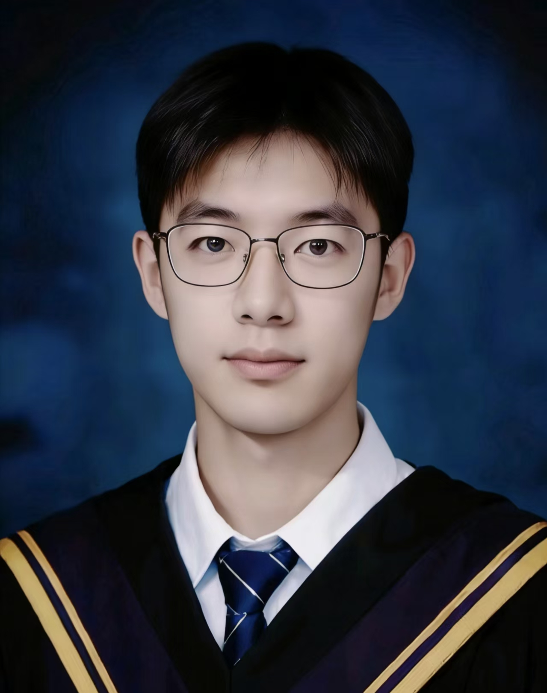

我是余剑豪，目前为北京交通大学计算机科学与技术学院人工智能专业硕士研究生，所在实验室为 ADaM 实验室，导师为桑基韬教授。当前主要关注 AI Agent、Agent Harness、大模型推理、智能体评测、工具调用、规划与多模态智能系统。
本科毕业于吉林外国语大学人工智能专业，专业排名 1/97，本科绩点 4.1/5.0。本科阶段主要围绕多模态驾驶行为监测、自然语言处理、 目标检测、智能软件系统和 AI 工程化应用开展项目实践。
AI Agent Agent Harness 大模型推理 智能体评测 工具调用 任务规划 多模态智能 自然语言处理 计算机视觉
关注大模型智能体在工具调用、任务分解、推理轨迹、执行反馈和失败归因方面的评测与优化， 希望构建面向真实任务的 Agent Harness 与评测框架。
具备多模态驾驶员健康监测、目标检测、生理信号融合和智能车载应用相关项目经验， 关注多源信息融合在实际智能系统中的落地。
《基于多模态融合的智能驾驶安全监测系统设计与实现》
围绕驾驶员疲劳与健康状态监测，结合目标检测、行为分析和多模态信息融合，设计并实现驾驶安全监测系统。
面向大模型智能体推理与工具调用评测的研究型项目，计划构建任务执行、推理轨迹、工具调用、 失败分析和自动评分模块，用于分析 LLM-based Agent 在复杂任务中的能力边界。
关键词：AI Agent、Agent Harness、大模型评测、推理轨迹、工具调用、失败归因
作为项目主持人，设计多模态 DMS 驾驶员健康监测系统，融合驾驶行为影像、生理时序信号和车载环境数据， 实现驾驶员心率、血氧、疲劳状态等指标的实时监测与风险预警。
关键词：多模态学习、驾驶员监测、健康预警、DMS、目标检测、智能车载系统
基于华为云 ModelArts 平台与 MindSpore 框架，参与车载场景大语言模型多轮对话系统开发， 覆盖数据标注、指令微调、模型压缩与云端部署。项目中针对边缘设备适配轻量化算子， 支撑端侧 AI Agent 实时交互能力。
关键词：自然语言处理、ModelArts、MindSpore、指令微调、模型压缩、端侧智能体
基于 ImageNet 预训练模型优化医学影像识别训练流程，采用旋转、缩放、平移等数据增强策略提升模型泛化能力， 并引入 LIME/SHAP 等方法增强模型可解释性，为医学影像辅助诊断提供技术支撑。
关键词：医学人工智能、影像识别、迁移学习、模型可解释性、LIME、SHAP
硕士研究生，2026.09 – 至今
在桑基韬老师指导下，准备围绕 AI Agent、Agent Harness、大模型推理、工具调用、任务规划与智能体评测开展研究。
科研任务部实习生，2026.01 – 2026.07
参与国家重大研发计划相关项目的流程标准化、项目进度管理、技术方案评审与科研团队协同工作， 支持研究团队与重点企业合作方之间的高效对接。
软件开发实习生，2023.07 – 2023.09
参与语音识别模型优化项目，提出基于注意力机制的声学模型改进方案；开发数据标注质量监控系统， 通过 NLP 文本分析识别标注错误模式，提高标注效率并支持模型迭代。
计算机科学与技术学院，人工智能专业，硕士研究生，2026.09 – 2029.06
所在实验室：ADaM 实验室；导师：桑基韬教授。
人工智能专业，工学学士，2022.09 – 2026.06
专业排名：1/97；本科绩点：4.1/5.0；英语水平：CET-6。
邮箱：yujianhao2138@gmail.com
GitHub：
https://github.com/JianhaoYu-AI